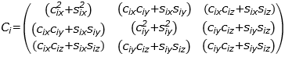
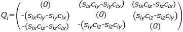
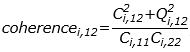
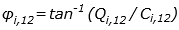
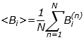
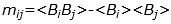
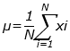
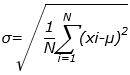

MagPy4 simplifies the analysis of magnetic field data. Using the program, you can examine the three components of the vector magnetic field and the total magnetic field as a function of time. When you have identified an interesting segment of data, you can apply any one of a series of standard analysis tools to that data. You can use the characteristics of the data to choose more natural coordinate systems in which to display the data. You can filter the data, perform Fourier analysis of the data, and so on.
The File menu allows you to open and add flat files, and to open CDF files.
The Data window allows you to view all the information about the data contained in the files you opened. It also allows you to choose a specific time or a specific data row and to view the corresponding magnetic field data.
The Plot window allows you to add plots to the program's main window or to remove plots that are already displayed there. You can also clear all plots from the window. You can choose which components of the magnetic field data to plot.
After selecting a time interval in the program's main window, the Spectra window displays the power spectrum of the magnetic field signals, the coherence, and the phase difference between any two components of the magnetic field. The Spectra windows also allows you to perform wave analysis.
A digital signal containing n points sampled every Δt seconds is nΔt seconds long. The lowest frequency that can be accurately determined in this finite length time series is (nΔt)-1 and the highest is (2Δt)-1 because two data points are required to define a wave. This maximum frequency is called the Nyquist frequency. Fast Fourier transform routines can transform a time series of fluctuations of one component of magnetic field signals into a series of cosine and sine amplitudes C0, C1, …, Cn/2-1 and S1, S2, …, Sn/2.
If there are three orthogonal measurements of wave amplitudes in direction x, y, and z, we can form the cospectral matrix of variances and cross variances at each frequency i:

This matrix is the cospectral density of the signal.
If you were to plot the sum of the diagonal terms (the trace) versus frequency, perhaps averaging over frequency to provide statistical accuracy or stability of the estimates, the plot would show the power spectral density of the signal versus frequency. This is called the power spectrum.
The cospectrum matrix is the real part of the spectrum matrix. The imaginary part of the spectrum matrix, which is called the quaspectrum matrix, can be calculated at each frequency i by:

These two matrixes give much information about wave properties. These properties were exploited by Born and Wolf (1970) to analyze optical signals and by Rankin and Kurtz (1970) to analyze micropulsations. Means (1972) showed that the direction of propagation can be directly obtained from the matrix Qi.
The coherence between signals 1 and signals 2 at each frequency i is defined by:

where Ci,mn is the mn-component of the cospectrum at each frequency i and Qi,mn is the mn-component of the quaspectrum at each frequency i.
Phase is the difference, expressed in degrees or radians, between two waves having the same frequency and referenced to the same point in time. The phase difference between signal 1 and signal 2 at each frequency i can be defined by:

The Edit window allows you to perform matrix rotation and filtering. You can either click the Custom Rotation button to specify a custom rotation or click the Minimum Variance button to calculate the minimum variance matrix, and then transform the magnetic field vector to the new coordinate. You can also click the Filter button to filter the data.
By solving an eigenvalue problem, it is possible to calculate the rotation matrix that rotates a vector time series into a coordinate system in which the direction of the coordinate axes are those of the maximum variance, the minimum variance, and an intermediate variance. The eigenvectors are the rows of the transformation matrix and the eigenvalues are the variances along each direction. These directions are called the principal axes. The system is also called the minimum variance coordinate system. It can often be used at the magnetopause, but not at shocks. Usually, the direction in which the magnetic field has a minimum variance is the direction normal to the magnetopause.
Assume the data set you choose is [B1, B2, …, BN] and construct a variance matrix M. Nine terms of M are mij (i and j represent the x, y, and z components). Assume the eigenvalues of M are λμ (μ=1,2,3) and the eigenvectors that form the transformation matrix are Vμ.


MVμ = λμVμ.
The Options menu allows you to change the style of the plot. You can choose to scale the y-range of the data to the current time selection, to draw smooth, antialiased lines, to bridge the gaps between data, and to draw only data points rathern than lines between those points.
The time interval selection bar allows you to change the time interval of the data plotted in the program's main window. The top bar controls the start time and the bottom bar controls the stop time.
The Trace Stats window appears when you click the start and stop time you are interested in on the main plotting window. It shows you the minimum value, maximum value, mean value, median value, and standard deviation of the magnetic field data in the time interval you choose.
Suppose [x1, x2, …, xN] is the data set of one component of the vector magnetic field or the total magnetic field in the time interval you choose. Minimum is the smallest value of this data set and maximum is the largest value. The median is the value separating the higher half from the lower half of the data set. Suppose the mean value is μ and the standard deviation is σ, then:

